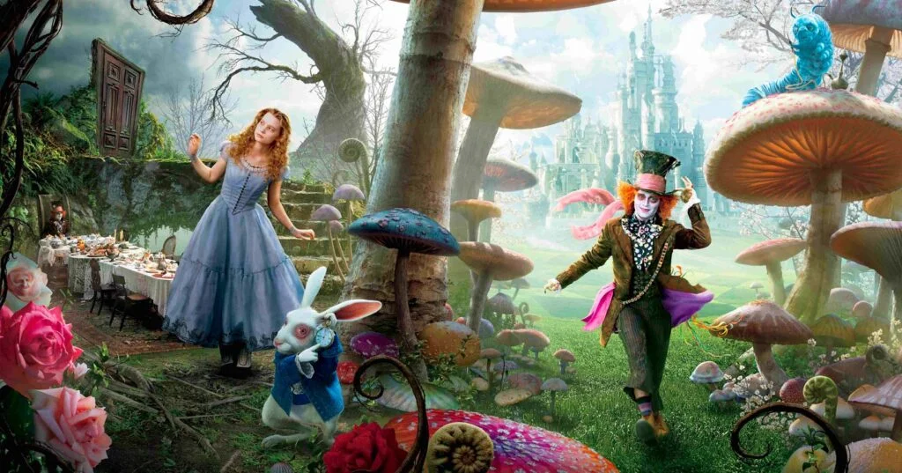

Alice estava passeando perto do rio quando viu uma trilha desconhecida cercada por flores luminosas. Sem saber o que a esperava, ela decidiu entrar.
O caminho brilha sob o sol. Borboletas falantes dançam no ar. Uma delas diz: “Siga a luz do carvalho se quiser encontrar o coração da floresta.”
O ar fica frio e o vento sussurra segredos. Uma raposa de olhos verdes surge e fala: “Cuidado com o lago das ilusões.”